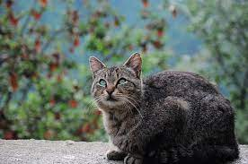
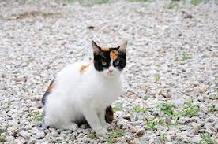
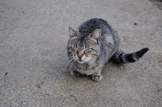
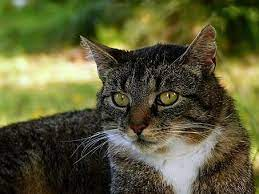

Willkommen auf der Katzenseite!
...hier gibt es viele Bereiche, in denen du etwas über Katzen lernen kannst, oder einfach nur Spaß haben kannst!
Momentan bist du auf der Home-Seite, dass kannst du auch oben links in der Ecke sehen.
Über die Schnellzugriffsleiste oben kannst du schnell auf die verschidenen Bereiche zugreifen,
Wie zum Beispiel auf den Bildbereich, in dem du auf "Bilder" klickst.
Schaue dich einfach mal auf der Seite um. Viel Spaß!
Momentan bist du auf der Home-Seite, dass kannst du auch oben links in der Ecke sehen.
Über die Schnellzugriffsleiste oben kannst du schnell auf die verschidenen Bereiche zugreifen,
Wie zum Beispiel auf den Bildbereich, in dem du auf "Bilder" klickst.
Schaue dich einfach mal auf der Seite um. Viel Spaß!
I Bilder
Hier findest du Katzenbilder. Du möchtest mehr Bilder sehen? Klicke hier. Wurden die Bilder nicht korrekt geladen?
Lade sie neu.




II Lernen
Hier, im Lernbereich kannst du Dinge über die Katze erfahren. Den gesamten Lernbereich findest du hier.
1. Rassen


In diesem Abschnitt des Lernbereichs kannst du etwas über die verschiedenen Rassen erfahren.
Zuerst kannst du dir ein Paar Steckbriefe der jeweiligen Rasse anschauen. Alle Steckbriefe und Merkmale der verschiedenen Rassen findest du hier.
Zuerst kannst du dir ein Paar Steckbriefe der jeweiligen Rasse anschauen. Alle Steckbriefe und Merkmale der verschiedenen Rassen findest du hier.
2. Allgemeines
In diesem Abschnitt des Lernbereichs kannst du Allgemeines über die Katze erfahren, zum Beispiel wie man sie richtig füttert.
Ausführlicheres findest du hier.
Ausführlicheres findest du hier.
A. Fütterung
In diesem Abschnitt kannst du lernen, wie man Katzen richtig füttert.
Im allgemeinen musst du darauf achten, dass deine Katze die richtige Menge an Portionen Futter pro Tag frisst.
(Du kannst deiner Katze natürlich weiterhin Leckerlies geben.)
Außerdem ist es sehr wichtig, dass deine Katze nichts falsches frisst.
Hier findest du eine Liste von Essen, die Katzen nicht fressen dürfen, ansonsten werden sie krank.
(Du kannst deiner Katze natürlich weiterhin Leckerlies geben.)
Hier kannst du die richtige Anzahl an Portionen für deine Katze nachgucken:
- Katzen-Junges (0-12 Monate): 4 Portionen pro Tag
- Erwachsene Katze (18 Monate - 11 Jahre): 2 Portionen pro Tag
- Ältere Katzen (11 Jahre und älter): 1 Portion pro Tag
Außerdem ist es sehr wichtig, dass deine Katze nichts falsches frisst.
Hier findest du eine Liste von Essen, die Katzen nicht fressen dürfen, ansonsten werden sie krank.
- Schokolade, Kakao, Süßigkeiten, Backwaren, etc.
- Rohes Fleisch und roher Süßwasserfisch
- Wurst und geräuertes Fleisch
- Gekochte Leber
- Milchprodukte
- Lauchgewächse: Knoblauch, Zwiebel, etc.
- Steinobst: Pflaumen, Aprikosen, etc.
- Trauben und Rosinen
- Essensreste